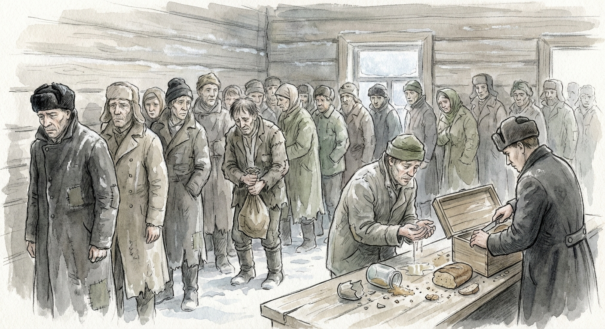

Have you ever wondered what a scene from your favorite book would look like as a visual illustration? The Book Image Generator is a Python CLI tool that transforms literary text into stunning visual representations using Google's Gemini AI. Whether you're a book lover, educator, or creative professional, this tool opens up new possibilities for visualizing narrative content.
What It Does
The Book Image Generator takes a book title and text content, then creates beautiful, stylized images that capture the essence of the scene. It intelligently extracts keywords from book titles to understand the setting and atmosphere, combines this with the actual text content, and applies customizable artistic styles to generate unique visualizations.
- Automatic keyword extraction from book titles
- Multiple preset styles (watercolor, hand-drawn, narrative illustration, etc.)
- Customizable aspect ratios and image sizes
- Interactive prompt preview before generation
- Auto-generated filenames with timestamps
How It Works
The process is elegantly simple yet powerful:
- Keyword Extraction: The tool uses Gemini Pro to analyze the book title and extract relevant keywords that capture the setting, atmosphere, and themes.
- Prompt Construction: It combines the book title, extracted keywords, text content, and selected style preset into a rich, descriptive prompt that guides the AI.
- Style Application: Preset styles (defined in YAML files) provide detailed artistic guidelines including lighting, color palettes, camera angles, and base style descriptions.
- Image Generation: Gemini 3 Pro Image Preview generates the final image based on the carefully constructed prompt and style instructions.
Example Usage
Here's how you would use it to generate an image for a book page:
python main.py generate \
--title "A Day in the Life of Ivan Denisovich" \
--text-file sample_page.txt \
--style watercolor
The tool will extract keywords, show you a preview of the prompt it
will use, ask for confirmation, and then generate the image. The
output is automatically saved with a descriptive filename like
a_day_in_the_life_of_ivan_denisovich_20250106_143022.jpg.
Example Output
Here's a real example generated from "A Day in the Life of Ivan Denisovich" using the hand-drawn narrative illustration style:

Generated illustration using the hand-drawn narrative illustration style
Customizable Styles
One of the most powerful features is the preset system. You can create custom artistic styles by defining YAML files that specify:
- Base style description (e.g., "Watercolor illustration, soft edges, muted colors")
- Lighting conditions
- Color palettes
- Camera angles and perspectives
- Artistic accents
This allows you to maintain visual consistency across multiple images or experiment with different artistic interpretations of the same text.
Technical Details
Built with Python 3.10+ and leveraging Google's Gemini API, the tool is designed to be both powerful and user-friendly. It supports various aspect ratios (1:1, 2:3, 3:4, 16:9, etc.) and image sizes (1K, 2K, 4K), giving you control over the final output format.
Use Cases
This tool is perfect for:
- Book bloggers and reviewers: Create visual content to accompany book reviews
- Educators: Generate illustrations for teaching literature
- Content creators: Produce unique artwork for social media or websites
- Book clubs: Visualize scenes during discussions
- Personal projects: Create custom artwork for favorite passages
Getting Started
To get started, you'll need:
- A Gemini API key from Google AI Studio
- Python 3.10+ installed
- The project dependencies (install with
uv sync)
Once set up, you can start generating beautiful visualizations of your favorite literary passages in minutes!
Conclusion
The Book Image Generator bridges the gap between text and visual art, making it easier than ever to create compelling illustrations from literary content. With its flexible preset system and intelligent prompt construction, it's a powerful tool for anyone looking to visualize the worlds described in books.
Whether you're creating content for a blog, preparing educational materials, or simply exploring the visual potential of literature, this tool provides an accessible way to bring words to life through AI-generated imagery.
View on GitHub →